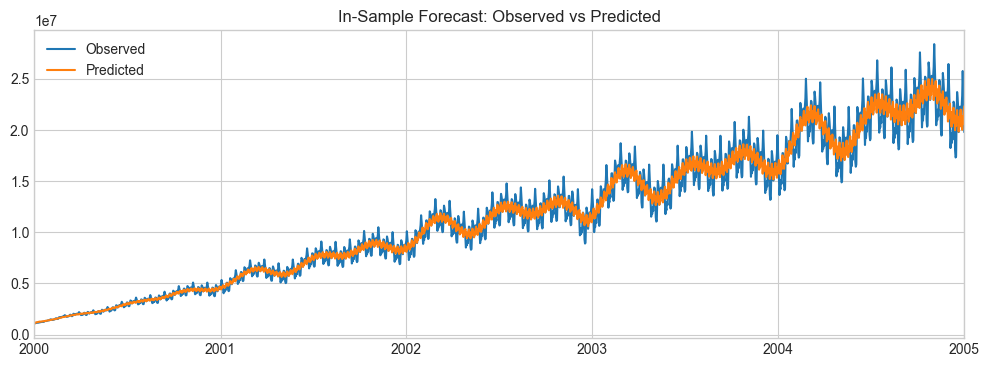
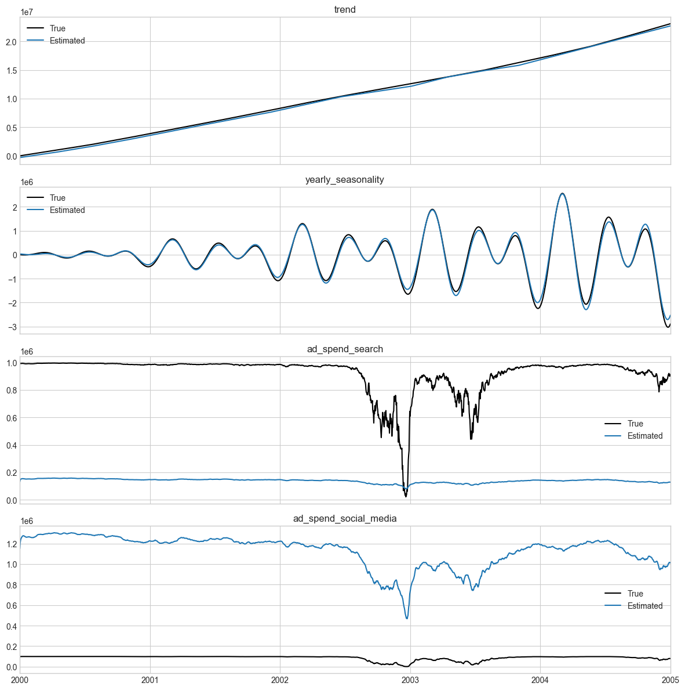
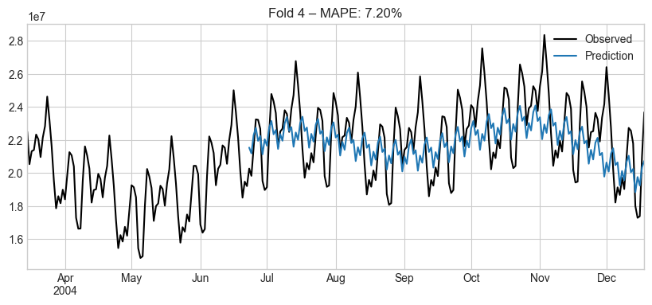
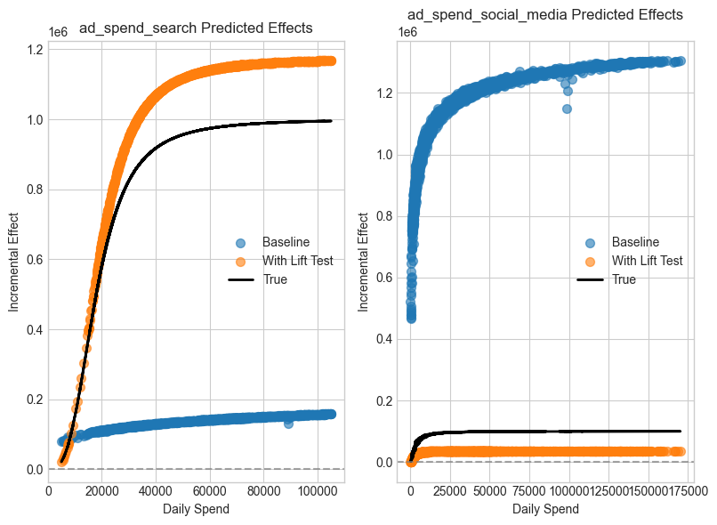

Prophetverse Marketing Mix Modeling:
Forecasting, Calibration, and Unified Marketing Measurement
In this tutorial, we walk through the lifecycle of a modern Marketing Mix Model (MMM), from time-series forecasting to incorporating causal evidence like lift tests and attribution.
You will learn:
-
How to forecast revenue using media spend with Adstock and Saturation effects.
-
How to diagnose model behavior and evaluate with backtesting.
-
Why correlated spend channels confuse effect estimation—and how to fix it.
-
How to calibrate your model using lift tests and attribution models for better ROI measurement.
üëâ Why this matters: MMMs are foundational for budget allocation. But good predictions are not enough‚Äî we need credible effect estimates to make real-world decisions.
Let’s get started!
Setting up some libraries, float64 precision, and plot style.
import warnings
warnings.filterwarnings("ignore")
import numpy as np
import pandas as pd
import matplotlib.pyplot as plt
import numpyro
import numpyro.distributions as dist
plt.style.use("seaborn-v0_8-whitegrid")
numpyro.enable_x64() # Necessary for precision in numerical optimization
from prophetverse.datasets._mmm.dataset1 import get_dataset
# Load synthetic data
# This lets us compare model output with known “true” components
y, X, lift_tests, true_components, _ = get_dataset()
lift_test1, lift_test2 = lift_tests
print(f"y shape: {y.shape}, X shape: {X.shape}")
X.head()
Output: [2]
| ad_spend_search | ad_spend_social_media | |
|---|---|---|
| 2000-01-01 | 89076.191178 | 98587.488958 |
| 2000-01-02 | 88891.993106 | 99066.321168 |
| 2000-01-03 | 89784.955064 | 97334.106903 |
| 2000-01-04 | 89931.220681 | 101747.300585 |
| 2000-01-05 | 89184.319596 | 93825.221809 |
Part 1: Forecasting with Adstock & Saturation Effects
Here we’ll build a time-series forecasting model that includes:
-
Trend and seasonality
-
Lagged media effects (Adstock)
-
Diminishing returns (Saturation / Hill curves)
üîé Why this matters:
Raw spend is not immediately effective, and it doesn’t convert linearly. Capturing these dynamics is essential to make ROI estimates realistic.
In Prophetverse, we define the model as triplets of:
-
Effect name: e.g.
ad_spend_search -
Effect object: e.g.
HillEffect() -
Input columns: columns from
Xthat should be passed to the effect. We useNonewhen the effect is not directly driven by input columns, and a regex to query multiple columns when the effect is driven by multiple inputs, e.g."ad_spend_.*","holidays_*".
from prophetverse.effects import (
PiecewiseLinearTrend,
LinearFourierSeasonality,
ChainedEffects,
GeometricAdstockEffect,
HillEffect,
)
from prophetverse.sktime import Prophetverse
from prophetverse.engine import MAPInferenceEngine
from prophetverse.engine.optimizer import LBFGSSolver
# Seasonal patterns
yearly = (
"yearly_seasonality",
LinearFourierSeasonality(
freq="D",
sp_list=[365.25],
fourier_terms_list=[5],
prior_scale=0.1,
effect_mode="multiplicative",
),
None,
)
weekly = (
"weekly_seasonality",
LinearFourierSeasonality(
freq="D",
sp_list=[7],
fourier_terms_list=[3],
prior_scale=0.05,
effect_mode="multiplicative",
),
None,
)
# Chain Adstock and Saturation for each channel
hill = HillEffect(
half_max_prior=dist.HalfNormal(1),
slope_prior=dist.InverseGamma(2, 1),
max_effect_prior=dist.HalfNormal(1),
effect_mode="additive",
input_scale=1e6,
)
chained_search = (
"ad_spend_search",
ChainedEffects([("adstock", GeometricAdstockEffect()), ("saturation", hill)]),
"ad_spend_search",
)
chained_social = (
"ad_spend_social_media",
ChainedEffects([("adstock", GeometricAdstockEffect()), ("saturation", hill)]),
"ad_spend_social_media",
)
We are ready to define our Prophetverse model
# Prophetverse model with MAP inference
baseline_model = Prophetverse(
trend=PiecewiseLinearTrend(changepoint_interval=100),
exogenous_effects=[yearly, weekly, chained_search, chained_social],
inference_engine=MAPInferenceEngine(
num_steps=5000,
optimizer=LBFGSSolver(memory_size=200, max_linesearch_steps=200),
),
)
# Fit and predict in-sample
baseline_model.fit(y=y, X=X)
Output: [4]
Prophetverse(exogenous_effects=[('yearly_seasonality',
LinearFourierSeasonality(effect_mode='multiplicative',
fourier_terms_list=[5],
freq='D',
prior_scale=0.1,
sp_list=[365.25]),
None),
('weekly_seasonality',
LinearFourierSeasonality(effect_mode='multiplicative',
fourier_terms_list=[3],
freq='D',
prior_scale=0.05,
sp_list=[7]),
None),
('ad_spend_search',
Chained...
max_effect_prior=<numpyro.distributions.continuous.HalfNormal object at 0x315cee290 with batch shape () and event shape ()>,
slope_prior=<numpyro.distributions.continuous.InverseGamma object at 0x31ab02090 with batch shape () and event shape ()>))]),
'ad_spend_social_media')],
inference_engine=MAPInferenceEngine(num_steps=5000,
optimizer=LBFGSSolver(max_linesearch_steps=200,
memory_size=200)),
trend=PiecewiseLinearTrend(changepoint_interval=100))Please rerun this cell to show the HTML repr or trust the notebook.Prophetverse(exogenous_effects=[('yearly_seasonality',
LinearFourierSeasonality(effect_mode='multiplicative',
fourier_terms_list=[5],
freq='D',
prior_scale=0.1,
sp_list=[365.25]),
None),
('weekly_seasonality',
LinearFourierSeasonality(effect_mode='multiplicative',
fourier_terms_list=[3],
freq='D',
prior_scale=0.05,
sp_list=[7]),
None),
('ad_spend_search',
Chained...
max_effect_prior=<numpyro.distributions.continuous.HalfNormal object at 0x315cee290 with batch shape () and event shape ()>,
slope_prior=<numpyro.distributions.continuous.InverseGamma object at 0x31ab02090 with batch shape () and event shape ()>))]),
'ad_spend_social_media')],
inference_engine=MAPInferenceEngine(num_steps=5000,
optimizer=LBFGSSolver(max_linesearch_steps=200,
memory_size=200)),
trend=PiecewiseLinearTrend(changepoint_interval=100))PiecewiseLinearTrend(changepoint_interval=100)
LinearFourierSeasonality(effect_mode='multiplicative', fourier_terms_list=[5],
freq='D', prior_scale=0.1, sp_list=[365.25])LinearFourierSeasonality(effect_mode='multiplicative', fourier_terms_list=[3],
freq='D', prior_scale=0.05, sp_list=[7])ChainedEffects(steps=[('adstock', GeometricAdstockEffect()),
('saturation',
HillEffect(effect_mode='additive',
half_max_prior=<numpyro.distributions.continuous.HalfNormal object at 0x31a3992d0 with batch shape () and event shape ()>,
input_scale=1000000.0,
max_effect_prior=<numpyro.distributions.continuous.HalfNormal object at 0x315cee290 with batch shape () and event shape ()>,
slope_prior=<numpyro.distributions.continuous.InverseGamma object at 0x31ab02090 with batch shape () and event shape ()>))])GeometricAdstockEffect()
HillEffect(effect_mode='additive',
half_max_prior=<numpyro.distributions.continuous.HalfNormal object at 0x31a3992d0 with batch shape () and event shape ()>,
input_scale=1000000.0,
max_effect_prior=<numpyro.distributions.continuous.HalfNormal object at 0x315cee290 with batch shape () and event shape ()>,
slope_prior=<numpyro.distributions.continuous.InverseGamma object at 0x31ab02090 with batch shape () and event shape ()>)ChainedEffects(steps=[('adstock', GeometricAdstockEffect()),
('saturation',
HillEffect(effect_mode='additive',
half_max_prior=<numpyro.distributions.continuous.HalfNormal object at 0x31a3992d0 with batch shape () and event shape ()>,
input_scale=1000000.0,
max_effect_prior=<numpyro.distributions.continuous.HalfNormal object at 0x315cee290 with batch shape () and event shape ()>,
slope_prior=<numpyro.distributions.continuous.InverseGamma object at 0x31ab02090 with batch shape () and event shape ()>))])GeometricAdstockEffect()
HillEffect(effect_mode='additive',
half_max_prior=<numpyro.distributions.continuous.HalfNormal object at 0x31a3992d0 with batch shape () and event shape ()>,
input_scale=1000000.0,
max_effect_prior=<numpyro.distributions.continuous.HalfNormal object at 0x315cee290 with batch shape () and event shape ()>,
slope_prior=<numpyro.distributions.continuous.InverseGamma object at 0x31ab02090 with batch shape () and event shape ()>)MAPInferenceEngine(num_steps=5000,
optimizer=LBFGSSolver(max_linesearch_steps=200,
memory_size=200))y_pred = baseline_model.predict(X=X, fh=X.index)
# Plot results
plt.figure(figsize=(12, 4))
y.plot(label="Observed")
y_pred.plot(label="Predicted")
plt.title("In-Sample Forecast: Observed vs Predicted")
plt.legend()
plt.show()
Output: [5]

1.1 Component-Level Diagnostics
Use .predict_components() to inspect decomposed effects:
-
Trend and seasonality
-
Channel-specific effects
üëâ Tip: This lets you debug which parts of your model are contributing (or not).
Output: [6]
| ad_spend_search | ad_spend_social_media | mean | obs | trend | weekly_seasonality | yearly_seasonality | |
|---|---|---|---|---|---|---|---|
| 2000-01-01 | 131520.111924 | 1.150603e+06 | 1.015148e+06 | 1.053109e+06 | -286813.831445 | -12560.154761 | 32398.696204 |
| 2000-01-02 | 143803.965722 | 1.206190e+06 | 1.102543e+06 | 1.030596e+06 | -277749.525722 | -526.316360 | 30825.164277 |
| 2000-01-03 | 148871.258969 | 1.230351e+06 | 1.136278e+06 | 1.193281e+06 | -268685.219998 | -3484.000211 | 29224.289349 |
| 2000-01-04 | 151241.204338 | 1.245422e+06 | 1.177322e+06 | 1.126865e+06 | -259620.914275 | 12676.912163 | 27603.382378 |
| 2000-01-05 | 152278.861893 | 1.252928e+06 | 1.182174e+06 | 1.172105e+06 | -250556.608552 | 1554.128384 | 25969.748353 |
fig, axs = plt.subplots(4, 1, figsize=(12, 12), sharex=True)
for i, name in enumerate(
["trend", "yearly_seasonality", "ad_spend_search", "ad_spend_social_media"]
):
true_components[name].plot(ax=axs[i], label="True", color="black")
y_pred_components[name].plot(ax=axs[i], label="Estimated")
axs[i].set_title(name)
axs[i].legend()
plt.tight_layout()
plt.show()
Output: [7]

1.2 Backtesting with Cross-Validation
We use rolling-window CV to assess out-of-sample accuracy using MAPE.
ü߆ Caution: Low error ‚↠correct attribution. But high error often indicates a bad model.
from sktime.split import ExpandingWindowSplitter
from sktime.performance_metrics.forecasting import MeanAbsolutePercentageError
from sktime.forecasting.model_evaluation import evaluate
metric = MeanAbsolutePercentageError()
cv = ExpandingWindowSplitter(
initial_window=365 * 3, step_length=180, fh=list(range(1, 180))
)
cv_results = evaluate(
forecaster=baseline_model,
y=y,
X=X,
cv=cv,
scoring=metric,
return_data=True,
)
cv_results["test_MeanAbsolutePercentageError"].mean()
Output: [8]
np.float64(0.07168488379870389)
for idx, row in cv_results.iterrows():
plt.figure(figsize=(10, 4))
pd.concat([row["y_train"].iloc[-100:], row["y_test"]]).plot(
label="Observed", color="black"
)
row["y_pred"].plot(label="Prediction")
plt.title(f"Fold {idx+1} – MAPE: {row['test_MeanAbsolutePercentageError']:.2%}")
plt.legend()
plt.show()
if idx > 3:
break
Output: [9]



1.3 Saturation Curves
These curves show diminishing marginal effect as spend increases.
üîç Insight: This shape helps guide budget allocation decisions (e.g. where additional spend will have little return).
Note how the model captures a saturation effect, but it is still far from the correct shape.
This is why, in many situations, you will need calibration to correct the model's behavior. This is what we will do in the next section.
fig, axs = plt.subplots(figsize=(12, 6), nrows=1, ncols=2)
for ax, channel in zip(axs, ["ad_spend_search", "ad_spend_social_media"]):
ax.scatter(X[channel], y_pred_components[channel], alpha=0.6, label=channel)
ax.scatter(X[channel], true_components[channel], color="black", label="True Effect")
ax.set(
xlabel="Daily Spend",
ylabel="Incremental Effect",
title=channel + " - Saturation Curve",
)
ax.legend()
fig.show()
Output: [10]

Part 2: Calibration with Causal Evidence
Time-series alone cannot disentangle correlated channels. We integrate lift tests (local experiments) and attribution models (high-resolution signal) to correct this.
Output: [11]
| lift | x_start | x_end | |
|---|---|---|---|
| 2004-10-06 | 1.052582 | 40341.767154 | 49484.088269 |
| 2004-02-04 | 1.032892 | 58495.653884 | 84002.024994 |
| 2000-11-06 | 1.016679 | 71531.092985 | 76531.908954 |
| 2003-05-16 | 1.124607 | 26907.284427 | 32512.144296 |
| 2000-11-08 | 1.020869 | 72599.750597 | 89604.382819 |
| 2004-03-07 | 1.031745 | 52757.679186 | 64868.518216 |
| 2000-05-07 | 1.012662 | 99996.136061 | 94223.267215 |
| 2001-02-19 | 1.010134 | 65093.431461 | 61643.297561 |
| 2002-04-02 | 1.025119 | 61348.678757 | 75097.513522 |
| 2002-12-05 | 0.941962 | 15130.845106 | 14559.409409 |
| 2002-07-17 | 1.033300 | 50602.621004 | 61561.222390 |
| 2004-04-27 | 1.028811 | 63706.416166 | 92286.506107 |
| 2000-07-17 | 1.010703 | 92339.710079 | 82120.888097 |
| 2002-12-12 | 1.736021 | 10447.017057 | 13154.365751 |
| 2000-04-21 | 1.009817 | 96608.570357 | 82236.408066 |
| 2004-08-14 | 1.010487 | 56934.883132 | 55014.981073 |
| 2003-05-27 | 1.253717 | 20725.849866 | 25917.050369 |
| 2003-07-14 | 1.212511 | 25704.179569 | 36440.566373 |
| 2001-02-01 | 1.019457 | 67352.193243 | 75884.561853 |
| 2003-11-23 | 1.031476 | 55990.598602 | 72568.532869 |
| 2001-10-26 | 1.025174 | 67906.685182 | 93399.577025 |
| 2004-01-06 | 1.019301 | 60549.085047 | 65612.128260 |
| 2004-07-17 | 1.025315 | 67354.435955 | 92061.937569 |
| 2002-10-21 | 1.356352 | 19342.497501 | 25654.928003 |
| 2001-09-17 | 1.007672 | 66940.425562 | 60975.537748 |
| 2004-11-30 | 1.130302 | 27602.264625 | 34344.815009 |
| 2004-12-26 | 1.022175 | 38511.161989 | 39737.886356 |
| 2001-09-20 | 1.023819 | 64080.310879 | 78594.396432 |
| 2002-05-16 | 1.015904 | 65554.939615 | 67996.877272 |
| 2003-10-31 | 1.014672 | 53044.156616 | 53463.620520 |
2.1 Visualizing Lift Tests
Each experiment records: pre-spend (x_start), post-spend (x_end), and measured lift.
These give us causal “ground truth” deltas.
fig, ax = plt.subplots(figsize=(8, 6))
ax.scatter(lift_test1["x_start"], [1] * len(lift_test1), label="Pre-Spend", alpha=0.6)
ax.scatter(lift_test1["x_end"], lift_test1["lift"], label="Observed Lift", alpha=0.6)
for _, row in lift_test1.iterrows():
ax.annotate(
"",
xy=(row["x_end"], row["lift"]),
xytext=(row["x_start"], 1),
arrowprops=dict(arrowstyle="->", alpha=0.5),
)
ax.axhline(1, linestyle="--")
ax.set(title="Search Ads Lift Tests", xlabel="Spend", ylabel="Revenue Ratio")
ax.legend()
plt.tight_layout()
plt.show()
Output: [12]

2.2 Improve Estimates via LiftExperimentLikelihood
This adds a new likelihood term that makes the model match lift observations.
üîÅ Still Bayesian: It incorporates test variance and model uncertainty.
Since we use sktime interface, we have access to get_params() and set_params(**kwargs) methods.
This allows us to easily swap effects and likelihoods.
When we define our model, the effect's name become a key in the model's
get_params() dictionary. We can use this to set the effect's parameters
directly.
from prophetverse.effects.lift_likelihood import LiftExperimentLikelihood
model_lift = baseline_model.clone()
model_lift.set_params(
ad_spend_search=LiftExperimentLikelihood(
effect=baseline_model.get_params()["ad_spend_search"],
lift_test_results=lift_test1,
prior_scale=0.01,
),
ad_spend_social_media=LiftExperimentLikelihood(
effect=baseline_model.get_params()["ad_spend_social_media"],
lift_test_results=lift_test2,
prior_scale=0.01,
),
)
model_lift.fit(y=y, X=X)
Output: [13]
Prophetverse(exogenous_effects=[('yearly_seasonality',
LinearFourierSeasonality(effect_mode='multiplicative',
fourier_terms_list=[5],
freq='D',
prior_scale=0.1,
sp_list=[365.25]),
None),
('weekly_seasonality',
LinearFourierSeasonality(effect_mode='multiplicative',
fourier_terms_list=[3],
freq='D',
prior_scale=0.05,
sp_list=[7]),
None),
('ad_spend_search',
LiftExp...
2002-01-29 0.989574 39214.672134 56545.763983
2001-05-19 0.985555 46499.449093 40163.797819
2002-11-15 1.200436 1451.982807 1752.828046
2001-08-11 0.984737 64502.380804 62625.006901,
prior_scale=0.01),
'ad_spend_social_media')],
inference_engine=MAPInferenceEngine(num_steps=5000,
optimizer=LBFGSSolver(max_linesearch_steps=200,
memory_size=200)),
trend=PiecewiseLinearTrend(changepoint_interval=100))Please rerun this cell to show the HTML repr or trust the notebook.Prophetverse(exogenous_effects=[('yearly_seasonality',
LinearFourierSeasonality(effect_mode='multiplicative',
fourier_terms_list=[5],
freq='D',
prior_scale=0.1,
sp_list=[365.25]),
None),
('weekly_seasonality',
LinearFourierSeasonality(effect_mode='multiplicative',
fourier_terms_list=[3],
freq='D',
prior_scale=0.05,
sp_list=[7]),
None),
('ad_spend_search',
LiftExp...
2002-01-29 0.989574 39214.672134 56545.763983
2001-05-19 0.985555 46499.449093 40163.797819
2002-11-15 1.200436 1451.982807 1752.828046
2001-08-11 0.984737 64502.380804 62625.006901,
prior_scale=0.01),
'ad_spend_social_media')],
inference_engine=MAPInferenceEngine(num_steps=5000,
optimizer=LBFGSSolver(max_linesearch_steps=200,
memory_size=200)),
trend=PiecewiseLinearTrend(changepoint_interval=100))PiecewiseLinearTrend(changepoint_interval=100)
LinearFourierSeasonality(effect_mode='multiplicative', fourier_terms_list=[5],
freq='D', prior_scale=0.1, sp_list=[365.25])LinearFourierSeasonality(effect_mode='multiplicative', fourier_terms_list=[3],
freq='D', prior_scale=0.05, sp_list=[7])LiftExperimentLikelihood(effect=ChainedEffects(steps=[('adstock',
GeometricAdstockEffect()),
('saturation',
HillEffect(effect_mode='additive',
half_max_prior=<numpyro.distributions.continuous.HalfNormal object at 0x31a3992d0 with batch shape () and event shape ()>,
input_scale=1000000.0,
max_effect_prior=<numpyro.distributions.continuous.HalfNormal object at 0x315cee2...
2004-07-17 1.025315 67354.435955 92061.937569
2002-10-21 1.356352 19342.497501 25654.928003
2001-09-17 1.007672 66940.425562 60975.537748
2004-11-30 1.130302 27602.264625 34344.815009
2004-12-26 1.022175 38511.161989 39737.886356
2001-09-20 1.023819 64080.310879 78594.396432
2002-05-16 1.015904 65554.939615 67996.877272
2003-10-31 1.014672 53044.156616 53463.620520,
prior_scale=0.01)ChainedEffects(steps=[('adstock', GeometricAdstockEffect()),
('saturation',
HillEffect(effect_mode='additive',
half_max_prior=<numpyro.distributions.continuous.HalfNormal object at 0x31a3992d0 with batch shape () and event shape ()>,
input_scale=1000000.0,
max_effect_prior=<numpyro.distributions.continuous.HalfNormal object at 0x315cee290 with batch shape () and event shape ()>,
slope_prior=<numpyro.distributions.continuous.InverseGamma object at 0x31ab02090 with batch shape () and event shape ()>))])GeometricAdstockEffect()
HillEffect(effect_mode='additive',
half_max_prior=<numpyro.distributions.continuous.HalfNormal object at 0x31a3992d0 with batch shape () and event shape ()>,
input_scale=1000000.0,
max_effect_prior=<numpyro.distributions.continuous.HalfNormal object at 0x315cee290 with batch shape () and event shape ()>,
slope_prior=<numpyro.distributions.continuous.InverseGamma object at 0x31ab02090 with batch shape () and event shape ()>)LiftExperimentLikelihood(effect=ChainedEffects(steps=[('adstock',
GeometricAdstockEffect()),
('saturation',
HillEffect(effect_mode='additive',
half_max_prior=<numpyro.distributions.continuous.HalfNormal object at 0x31a3992d0 with batch shape () and event shape ()>,
input_scale=1000000.0,
max_effect_prior=<numpyro.distributions.continuous.HalfNormal object at 0x315cee2...
2004-03-12 0.993162 23495.675246 24478.491907
2001-10-29 0.984360 44379.074948 37313.349224
2002-05-30 0.989024 27726.620636 31907.853065
2003-01-02 1.010906 1773.725603 1554.825745
2002-01-29 0.989574 39214.672134 56545.763983
2001-05-19 0.985555 46499.449093 40163.797819
2002-11-15 1.200436 1451.982807 1752.828046
2001-08-11 0.984737 64502.380804 62625.006901,
prior_scale=0.01)ChainedEffects(steps=[('adstock', GeometricAdstockEffect()),
('saturation',
HillEffect(effect_mode='additive',
half_max_prior=<numpyro.distributions.continuous.HalfNormal object at 0x31a3992d0 with batch shape () and event shape ()>,
input_scale=1000000.0,
max_effect_prior=<numpyro.distributions.continuous.HalfNormal object at 0x315cee290 with batch shape () and event shape ()>,
slope_prior=<numpyro.distributions.continuous.InverseGamma object at 0x31ab02090 with batch shape () and event shape ()>))])GeometricAdstockEffect()
HillEffect(effect_mode='additive',
half_max_prior=<numpyro.distributions.continuous.HalfNormal object at 0x31a3992d0 with batch shape () and event shape ()>,
input_scale=1000000.0,
max_effect_prior=<numpyro.distributions.continuous.HalfNormal object at 0x315cee290 with batch shape () and event shape ()>,
slope_prior=<numpyro.distributions.continuous.InverseGamma object at 0x31ab02090 with batch shape () and event shape ()>)MAPInferenceEngine(num_steps=5000,
optimizer=LBFGSSolver(max_linesearch_steps=200,
memory_size=200))Output: [14]
| ad_spend_search | ad_spend_social_media | mean | obs | trend | weekly_seasonality | yearly_seasonality | |
|---|---|---|---|---|---|---|---|
| 2000-01-01 | 1.162689e+06 | 35705.242566 | 1.101109e+06 | 1.139029e+06 | -104452.881522 | -4534.357116 | 11702.518169 |
| 2000-01-02 | 1.163530e+06 | 35786.143107 | 1.115020e+06 | 1.043151e+06 | -94557.682380 | -164.487497 | 10426.187964 |
| 2000-01-03 | 1.163845e+06 | 35803.215672 | 1.123059e+06 | 1.180000e+06 | -84662.483239 | -1092.249544 | 9165.351790 |
| 2000-01-04 | 1.163901e+06 | 35812.314845 | 1.136486e+06 | 1.086083e+06 | -74767.284097 | 3612.584111 | 7927.087023 |
| 2000-01-05 | 1.163661e+06 | 35810.765437 | 1.141719e+06 | 1.131661e+06 | -64872.084955 | 401.225818 | 6718.395100 |
# Compare predicted effects with updated styling
fig, axs = plt.subplots(figsize=(8, 6), ncols=2)
for ax, channel in zip(axs, ["ad_spend_search", "ad_spend_social_media"]):
ax.scatter(
X[channel],
y_pred_components[channel],
label="Baseline",
alpha=0.6,
s=50,
)
ax.scatter(
X[channel],
components_lift[channel],
label="With Lift Test",
alpha=0.6,
s=50,
)
ax.plot(
X[channel],
true_components[channel],
label="True",
color="black",
linewidth=2,
)
ax.set(
title=f"{channel} Predicted Effects",
xlabel="Daily Spend",
ylabel="Incremental Effect",
)
ax.axhline(0, linestyle="--", color="gray", alpha=0.7)
ax.legend()
plt.tight_layout()
plt.show()
Output: [15]

Much better, right? And it was implemented with a really modular and flexible code.
You could wrap any effect with LiftExperimentLikelihood to add lift test data to
guide its behaviour.
2.3 Add Attribution Signals with ExactLikelihood
Attribution models can provide daily signals. If available, you can
incorporate them by adding another likelihood term via ExactLikelihood.
We create a synthetic attribution signal by multiplying the true effect with a random noise factor.
from prophetverse.effects import ExactLikelihood
rng = np.random.default_rng(42)
attr_search = true_components[["ad_spend_search"]] * rng.normal(
1, 0.1, size=(len(y), 1)
)
attr_social = true_components[["ad_spend_social_media"]] * rng.normal(
1, 0.1, size=(len(y), 1)
)
attr_social.head()
Output: [16]
| ad_spend_social_media | |
|---|---|
| 2000-01-01 | 88305.141575 |
| 2000-01-02 | 96298.364313 |
| 2000-01-03 | 106375.410968 |
| 2000-01-04 | 99764.344046 |
| 2000-01-05 | 88181.843186 |
model_umm = model_lift.clone()
model_umm.set_params(
exogenous_effects=model_lift.get_params()["exogenous_effects"]
+ [
(
"attribution_search",
ExactLikelihood("ad_spend_search", attr_search, 0.01),
None,
),
(
"attribution_social_media",
ExactLikelihood("ad_spend_social_media", attr_social, 0.01),
None,
),
]
)
model_umm.fit(y=y, X=X)
Output: [17]
Prophetverse(exogenous_effects=[('yearly_seasonality',
LinearFourierSeasonality(effect_mode='multiplicative',
fourier_terms_list=[5],
freq='D',
prior_scale=0.1,
sp_list=[365.25]),
None),
('weekly_seasonality',
LinearFourierSeasonality(effect_mode='multiplicative',
fourier_terms_list=[3],
freq='D',
prior_scale=0.05,
sp_list=[7]),
None),
('ad_spend_search',
LiftExp...
2000-01-04 99764.344046
2000-01-05 88181.843186
... ...
2004-12-28 81379.372321
2004-12-29 87020.551262
2004-12-30 85365.036257
2004-12-31 83767.855979
2005-01-01 81874.950642
[1828 rows x 1 columns]),
None)],
inference_engine=MAPInferenceEngine(num_steps=5000,
optimizer=LBFGSSolver(max_linesearch_steps=200,
memory_size=200)),
trend=PiecewiseLinearTrend(changepoint_interval=100))Please rerun this cell to show the HTML repr or trust the notebook.Prophetverse(exogenous_effects=[('yearly_seasonality',
LinearFourierSeasonality(effect_mode='multiplicative',
fourier_terms_list=[5],
freq='D',
prior_scale=0.1,
sp_list=[365.25]),
None),
('weekly_seasonality',
LinearFourierSeasonality(effect_mode='multiplicative',
fourier_terms_list=[3],
freq='D',
prior_scale=0.05,
sp_list=[7]),
None),
('ad_spend_search',
LiftExp...
2000-01-04 99764.344046
2000-01-05 88181.843186
... ...
2004-12-28 81379.372321
2004-12-29 87020.551262
2004-12-30 85365.036257
2004-12-31 83767.855979
2005-01-01 81874.950642
[1828 rows x 1 columns]),
None)],
inference_engine=MAPInferenceEngine(num_steps=5000,
optimizer=LBFGSSolver(max_linesearch_steps=200,
memory_size=200)),
trend=PiecewiseLinearTrend(changepoint_interval=100))PiecewiseLinearTrend(changepoint_interval=100)
LinearFourierSeasonality(effect_mode='multiplicative', fourier_terms_list=[5],
freq='D', prior_scale=0.1, sp_list=[365.25])LinearFourierSeasonality(effect_mode='multiplicative', fourier_terms_list=[3],
freq='D', prior_scale=0.05, sp_list=[7])LiftExperimentLikelihood(effect=ChainedEffects(steps=[('adstock',
GeometricAdstockEffect()),
('saturation',
HillEffect(effect_mode='additive',
half_max_prior=<numpyro.distributions.continuous.HalfNormal object at 0x31a3992d0 with batch shape () and event shape ()>,
input_scale=1000000.0,
max_effect_prior=<numpyro.distributions.continuous.HalfNormal object at 0x315cee2...
2004-07-17 1.025315 67354.435955 92061.937569
2002-10-21 1.356352 19342.497501 25654.928003
2001-09-17 1.007672 66940.425562 60975.537748
2004-11-30 1.130302 27602.264625 34344.815009
2004-12-26 1.022175 38511.161989 39737.886356
2001-09-20 1.023819 64080.310879 78594.396432
2002-05-16 1.015904 65554.939615 67996.877272
2003-10-31 1.014672 53044.156616 53463.620520,
prior_scale=0.01)ChainedEffects(steps=[('adstock', GeometricAdstockEffect()),
('saturation',
HillEffect(effect_mode='additive',
half_max_prior=<numpyro.distributions.continuous.HalfNormal object at 0x31a3992d0 with batch shape () and event shape ()>,
input_scale=1000000.0,
max_effect_prior=<numpyro.distributions.continuous.HalfNormal object at 0x315cee290 with batch shape () and event shape ()>,
slope_prior=<numpyro.distributions.continuous.InverseGamma object at 0x31ab02090 with batch shape () and event shape ()>))])GeometricAdstockEffect()
HillEffect(effect_mode='additive',
half_max_prior=<numpyro.distributions.continuous.HalfNormal object at 0x31a3992d0 with batch shape () and event shape ()>,
input_scale=1000000.0,
max_effect_prior=<numpyro.distributions.continuous.HalfNormal object at 0x315cee290 with batch shape () and event shape ()>,
slope_prior=<numpyro.distributions.continuous.InverseGamma object at 0x31ab02090 with batch shape () and event shape ()>)LiftExperimentLikelihood(effect=ChainedEffects(steps=[('adstock',
GeometricAdstockEffect()),
('saturation',
HillEffect(effect_mode='additive',
half_max_prior=<numpyro.distributions.continuous.HalfNormal object at 0x31a3992d0 with batch shape () and event shape ()>,
input_scale=1000000.0,
max_effect_prior=<numpyro.distributions.continuous.HalfNormal object at 0x315cee2...
2004-03-12 0.993162 23495.675246 24478.491907
2001-10-29 0.984360 44379.074948 37313.349224
2002-05-30 0.989024 27726.620636 31907.853065
2003-01-02 1.010906 1773.725603 1554.825745
2002-01-29 0.989574 39214.672134 56545.763983
2001-05-19 0.985555 46499.449093 40163.797819
2002-11-15 1.200436 1451.982807 1752.828046
2001-08-11 0.984737 64502.380804 62625.006901,
prior_scale=0.01)ChainedEffects(steps=[('adstock', GeometricAdstockEffect()),
('saturation',
HillEffect(effect_mode='additive',
half_max_prior=<numpyro.distributions.continuous.HalfNormal object at 0x31a3992d0 with batch shape () and event shape ()>,
input_scale=1000000.0,
max_effect_prior=<numpyro.distributions.continuous.HalfNormal object at 0x315cee290 with batch shape () and event shape ()>,
slope_prior=<numpyro.distributions.continuous.InverseGamma object at 0x31ab02090 with batch shape () and event shape ()>))])GeometricAdstockEffect()
HillEffect(effect_mode='additive',
half_max_prior=<numpyro.distributions.continuous.HalfNormal object at 0x31a3992d0 with batch shape () and event shape ()>,
input_scale=1000000.0,
max_effect_prior=<numpyro.distributions.continuous.HalfNormal object at 0x315cee290 with batch shape () and event shape ()>,
slope_prior=<numpyro.distributions.continuous.InverseGamma object at 0x31ab02090 with batch shape () and event shape ()>)ExactLikelihood(effect_name='ad_spend_search', prior_scale=0.01,
reference_df= ad_spend_search
2000-01-01 1.022147e+06
2000-01-02 8.887188e+05
2000-01-03 1.066563e+06
2000-01-04 1.085466e+06
2000-01-05 7.984178e+05
... ...
2004-12-28 9.790619e+05
2004-12-29 8.292320e+05
2004-12-30 9.590487e+05
2004-12-31 9.845138e+05
2005-01-01 1.054480e+06
[1828 rows x 1 columns])ExactLikelihood(effect_name='ad_spend_social_media', prior_scale=0.01,
reference_df= ad_spend_social_media
2000-01-01 88305.141575
2000-01-02 96298.364313
2000-01-03 106375.410968
2000-01-04 99764.344046
2000-01-05 88181.843186
... ...
2004-12-28 81379.372321
2004-12-29 87020.551262
2004-12-30 85365.036257
2004-12-31 83767.855979
2005-01-01 81874.950642
[1828 rows x 1 columns])MAPInferenceEngine(num_steps=5000,
optimizer=LBFGSSolver(max_linesearch_steps=200,
memory_size=200))components_umm = model_umm.predict_components(X=X, fh=X.index)
# Compare all 3 models
fig, axs = plt.subplots(2, 1, figsize=(10, 10), sharex=True)
for ax, channel in zip(axs, ["ad_spend_search", "ad_spend_social_media"]):
ax.scatter(X[channel], y_pred_components[channel], label="Baseline", alpha=0.4)
ax.scatter(X[channel], components_lift[channel], label="With Lift Test", alpha=0.4)
ax.scatter(X[channel], components_umm[channel], label="With Attribution", alpha=0.4)
ax.plot(X[channel], true_components[channel], label="True Effect", color="black")
ax.set_title(channel)
ax.legend()
plt.tight_layout()
plt.show()
Output: [18]

Even better! And, due to sktime-like interface, wrapping and adding new effects is easy.
Final Thoughts: Toward Unified Marketing Measurement
✅ What we learned:
-
Adstock + saturation are essential to capture media dynamics.
-
Good predictions ≠ good attribution.
-
Causal data like lift tests can correct misattribution.
-
Attribution signals add further constraints.
üõ†Ô∏è Use this when:
-
Channels are correlated → Use lift tests.
-
You have granular model output → Add attribution likelihoods.
-
Everytime you have access to such data.
üß™ Model selection tip: Always validate causal logic, not just fit quality. A sharp-looking forecast might hide very bad ROI conclusions.
With Prophetverse, you can combine observational, experimental, and model-based signals into one coherent MMM+UMM pipeline.